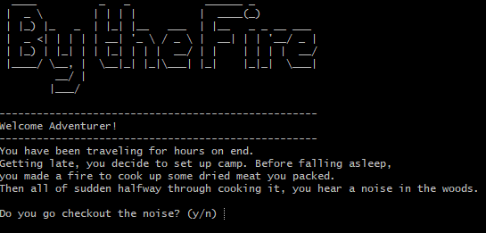
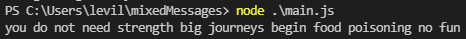

The projects listed here are to represent my coding experience. I started coding with JavaScript last year. Then after watching some videos and reading some articles I ran into Harvard's CS50 course. It was amazing in the way it used C to learn the basics of everything involved in computer programming. After that, I jumped into Python which I have been coding in for almost a year now. Now I am about to start learning Java so I can follow along with the book "Cracking the Coding Interview," by Gayle McDowell. Here are a few projects I've coded.
By the Fire is a text-based adventure where you take place as a wandering traveler. The project is to make a terminal program with python while using the input() function. Alongside that to showcase my abilities to use git version control, python, command line, and file navigation. The program features RNG (Random Number Generated) choices with a rich story and quick play time. The project is not complete and still has room for improvement.
The project Mixed Messages which I call Drunken Fortunes generates a random fortune. I named it drunken due to the fact of it puts together random phrases together of three different lists. The code will return a random fortune of good luck or just another rambling drunk. It's up to you to decide if it is good luck or not. The project showcases my skills in JavaScript and Git. This project is complete but could always have more improvements.
If you wish to checkout my github that contains projects I'm working on click here.